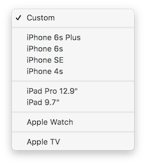
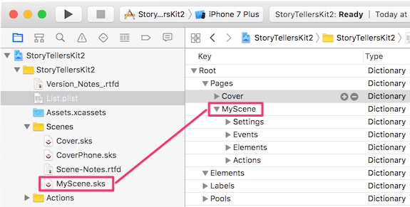
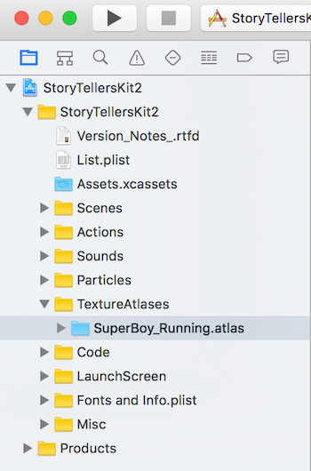

StoryTeller’s Kit Notes
Notes about StoryTeller’s Kit v2 from CartoonSmart.
Goals and Disclaimer
The purpose of this file is to:
-
organize info I’ve learned using the kit
-
create task-based documentation for personal use
-
associate reference information with procedures
-
document best practices
| This information is intended solely for my personal use. If you are a CartoonSmart customer, please disregard this file and refer to official product documentation instead. |
Projects
New Project Setup
Follow these procedures to setup a new project.
Download the kit
-
Navigate to Cartoonsmart.
-
Login using subscriber credentials.
-
Navigate to the documentation page.
-
Click Download it here.
-
Select a version of the kit that matches the version of Xcode you use.
The kit is updated for new releases of Xcode. If you update Xcode, chances are you’ll need a new version of the kit too. Otherwise you may encounter compile errors. The download page links to instructions for converting an older project. Click the link titled Read our General Upgrade Tips right here.
Duplicate the CleanCopy folder
New projects are based on the CleanCopy folder in the StoryTeller’s kit download. To get started, copy the CleanCopy folder. Then paste it wherever you want your project code to be. The CleanCopy folder contains an empty (clean) project to base new projects on.
-
Look in your Downloads directory for a folder named StoryTellersKit2_Latest.zip
-
Unzip that file. StoryTellersKit2_Latest.zip contains 2 folders:
-
StoryTellersKit2_version 1.14 (Swift 3)
-
StoryTellersKitTV_version1.2 (Swift3)
-
-
Expand the StoryTellersKit2_Latest folder.
-
Expand the StoryTellersKit2_version1.16 (Swift 3) folder. It contains 2 folders:
- CleanCopy
-
Minimal files you need to base a new project on.
- StoryTellersKit2
-
Demo version of the kit, containing sample scenes and resources.
-
Right-click the CleanCopy folder. Select Copy.
-
Navigate to the destination drive and folder of your choice.
-
Paste the CleanCopy folder.
-
Rename CleanCopy to something that identifies your new project.
Do not rename items inside your project folder. For example, if you rename StoryTellersKit2.xcodeproj to something else, the kit may not work.
Create a Workfiles folder
Optionally create a Workfiles folder to store projects associated with this kit project. For example, you may export images from an Illustrator project, or use a sound editor to clean up raw recordings. Whatever your work files are, you can keep them here.
Make Workfiles a sibling folder of CleanCopy, whatever you called it.
+ image::image011.png[]
Configure project settings
-
Start Xcode.
-
Navigate to your clean copy of the storyteller’s kit.
-
Open StoryTellersKit2.xcodeproj in XCode.
-
Click OK when asked whether to open a project downloaded from the Internet.
-
Click StoryTellersKit2 in the left pane. General project properties appear.
-
Change Display Name to the name of your application.
-
Change Bundle Identifier to the name of your website, but in reverse order. If you site is
mysite.com, you would type com.mysite. -
Use the Team box to select your personal team name.
Deployment settings scope the app to specific devices, or make it universal. . Use the Devices drop box to select iPad. . Check Device Orientation boxes as needed. The app is restricted to landscape orientations by default. That is usually what you want. .Optionally identify the icon you want to use for this application. To change that later, refer to Set the application icon.
Set the application icon
To set the icon that appears on the desktop:
-
Click the folder icon to show the project navigator.
-
In the App icons and launch images section, click the arrow next to the *App Icons Source box.
-
The AppIcon page appears, prompting you to drag images. These images must match specific pixel sizes for different devices. See https://developer.apple.com/library/content/qa/qa1686/_index.html for details. Here’s a snip from that page, showing icon sizes for iPad-only applications:
Items marked with "Required" must be included. Table 1. iPad-only application icon requirements. Image Size (px)
File Name
Used For
App Store
Ad Hoc
512x512
iTunesArtwork
Ad Hoc iTunes
Do not include
Optional but recommended
1024x1024
iTunesArtwork@2x
Ad Hoc iTunes on devices with retina display
Do not include
Optional but recommended
76x76
Icon-76.png
Home screen on iPad
Required
Required
152x152
Icon-76@2x.pngHome screen on iPad with retina display
Optional but recommended
Optional but recommended
167x167
Icon-83.5@2x.pngHome screen on iPad Pro
Optional but recommended
Optional but recommended
40x40
Icon-Small-40.png
Spotlight
Optional but recommended
Optional but recommended
80x80
Icon-Small-40@2x.pngSpotlight on devices with retina display
Optional but recommended
Optional but recommended
29x29
Icon-Small.png
Settings
Recommended if you have a Settings bundle, otherwise optional but recommended
Recommended if you have a Settings bundle, otherwise optional but recommended
58x58
Icon-Small@2x.pngSettings on devices with retina display
Recommended if you have a Settings bundle, otherwise optional but recommended
Recommended if you have a Settings bundle, otherwise optional but recommended
-
Drag and drop images into the iPad Settings slots.
-
1x is for 72-dpi images.
-
2x is for 144-dpi images.
-
3x is for 216-dip images
-
If you image is 72 dpi, drag it to the 1x slot. The 2x slot is for 144 dpi images, and so on. . When you are finished, your screen should look similar to:
Change the launch image
To set the image that appears briefly when the application starts:
-
Prepare your own startup image in png format. It can be any size that will fit on the screen of the target device. As a rule of thumb, it should be roughly 500 pixels wide at 144 dpi. The default CartoonSmart image is 500 x 309 pixels at 72dpi.
-
Name the image whatever you like.
-
Click the folder icon to show the project navigator.
-
Select ImageAtLaunch in the Assets.xcassets list.
-
Open Finder and locate your new image.
-
Drag and drop your image to replace the CartoonSmart image in the center slot.
-
Next, expand the LaunchScreen folder. Click LaunchScreen.storyboard. You will be prompted to select the device size your are targeting.
-
If necessary, drag the image to position it appropriately for the screen of the target device.
-
Save and compile the app. The startup image should be your own.
Pages
Page and Scene are interchangeable terms. Every scene is a SpriteKit scene file. Scene files have a .scn extension. Technically, "scene" makes more sense than "page". Since CartoonSmart documentation refers to pages, I use that term too. It makes sense to think about pages when constructing a book.
New Pages
Add a scene file
To add a page, simply add a SpriteKit scene file to the project.
-
In Xcode, select .
-
The iOS tab is selected by default. Under Resources, select SpriteKit Scene.
-
Click Next.
-
Give the scene an appropriate name.
-
Click Create to save it in the StoryTellersKit2 folder.
-
In the tree, drag the scene file to the Scenes folder.
-
Optionally create a corresponding phone-sided Scene at this time. If you do, name that MyScenePhone, replacing MyScene with the name of the iPad-sized scene. Set its scene size to 736w by 414h.
| To use cameras instead of multiple phone-specific scenes, see http://cartoonsmart.com/so-its-your-first-time-with-xcode-and-the-story-tellers-ios-starter-kit-2-now-what-video-guide/ at 2:00. |
Size page for a specific device
When a scene file is added, its default size is 750w by 1334h. The Attributes inspector allows you to set device size in width and height, but it is more convenient to use the Size dropdown instead.
-
Select the scene to load it.
-
Select the Attributes inspector.
-
Select a device from the Size drop list.
I don’t use the device selector. I use a custom device size that matches the 12.9 inch iPad Pro (2732 x 2048). Due to aspect ratio differences, the top and bottom edges are clipped on phones, but this works best across all devices. This practice eliminates the need to use multiple cameras. The caveat is, if you are developing a universal app for phones, you must design pages knowing that they will be clipped top and bottom by phones when devices differ from 16:9 aspect ratio. All iPads show the full image. To set a custom device size for MIM projects: .. Set Size to Custom. .. Set Width to 2732. .. Set Height to 2048. .. Set Anchor Point x to 0. .. Set Anchor Point y to 0.
+ 
-
Select portrait or landscape orientation.
How to fix Portrait orientation
When Portrait orientation is selected, the display remains in landscape mode, at least in the simulator. To correct this, it is necessary to change 1 line of code.
-
In Project Navigator, expand the StoryTellersKit2 folder.
-
Expand the Misc folder.
-
Select AppDelegate.swift. Code will load in the editor.
-
Locate the line that reads:
return UIInterfaceOrientationMask.landscape // change to .Portrait or .All if needed -
Change this statement to:
return UIInterfaceOrientationMask.portrait // change to .Portrait or .All if needed
Screen sizes and display resolutions
Information reproduced from Apple Comparison Chart:
| Device | Screen Size | Screen Resolution | Pixel Density |
|---|---|---|---|
iPad Pro |
12.9 inches |
2732 x 2048 |
264 ppi |
iPad Pro |
9.7 inches |
2048 x 1536 |
264 ppi |
iPad Air 2 |
9.7 inches |
2048 x 1536 |
264 ppi |
iPad Mini 4 |
7.9 inches |
2048 x 1536 |
326 ppi |
iPad Air |
9.7 inches |
2048 x 1536 |
264 ppi |
iPad Mini w Retina |
7.9 inches |
2048 x 1536 |
326 ppi |
iPad w Retina |
9.7 inches |
2048 x 1536 |
264 ppi |
iPad Mini |
7.9 inches |
1024 x 768 |
163 ppi |
iPad 3 |
9.7 inches |
2048 x 1536 |
264 ppi |
iPad 2 |
9.7 inches |
1024 x 768 |
132 ppi |
iPad |
9.7 inches |
1024 x 768 |
132 ppi |
Manually size for iPad Landscape mode
-
Click the Attributes inspector.
-
Select iPad 9.7" from the Size dropdown. Or manually set Width to 1024 and Height to 768.
Making a universal app?
iPhones and iPads have different screen sizes. There are two ways to develop a "universal" app that works on either family of device:
You can create 2 scenes for every page; one sized for iPad and the other sized for iPhone. This approach requires you to duplicate the appearance and functionality across pages.
-
Create the scene for iPad first. See Size page for a specific device. Cartoonsmart documentation recommends:
"Your Scene for the iPhone should have a Size setting of 736 and 414. The default is usually 1024 by 768 for the iPad. Be sure to set your iPhone Scene settings to 736 and 414, which matches the screen resolution of the iPhone 6 Plus. Not a Plus user? Not to worry, the iPhone 6 and iPhone 5 will still use these dimensions for positioning but scale down uniformly."
-
Create a second scene for iPhone, having the same name but suffixed with
Phone. For example, if you named your iPad scenePage1then you would name the scene for phonesPage1Phone. -
Create/recreate sprites, actions, and so on to make both scenes match, while optimizing sprites for the size of each page. This approach requires extra work.
Using cameras, it is easier to make an app universally viewable. The kit will automatically detect device type (phone or tablet). It will display the scene from the perspective of a camera whose scale setting is optimized for each device.
Cartoonsmart recommends that the Scale property of an iPad camera should be 1 for both its X and Y axis. For an iPhone camera, set Scale to .75 for both X and Y axis. (See Add cameras above a scene for procedural details.)
You can name cameras whatever you like. Examples might be CameraPhone and CameraPad. To tell the kit which to use, assign your camera names to InitialCamera and InitialCameraPhone keys in in .
| Cartoonsmart says this about cameras: "Your page can even set a different camera for the iPhone or iPad (and share the same Scene file). The camera can track a specific object and you can even make images or labels stick to the camera (great for interface elements)." |
To implement this method see:
Add cameras above a scene
A camera is an object you drag into a scene, like a color sprite.
To add a camera to a scene:
-
Click the icon to select the Object Library.
-
Filter the list by typing Camera in the search box.
-
Drag a Camera node to the scene.
If you are adding a camera for a universal app, drag the camera to the center of the screen, to position it over crosshairs. -
Name the camera
iPadCamera, or something similar. Leave the Scale setting at 1 for both the X and Y axis. That is the recommended setting for iPad cameras. -
Select the Scene again. Assign your camera to the scene my selecting
iPadCamera(or whatever you named it) from the Camera drop list. -
Add a second camera and name it
iPhoneCamera. -
For iPhoneCamera only, set zoom by changing the Scale property. Cartoonsmart recommends setting Scale to 0.75 for both the x and y of the camera dedicated to a phone.
If using custom screen sizes for MIM projects, set Scale of the iPhone camera to 1, or don’t use a second camera at all. -
Assign the Name of the camera to the scene’s InitialCamera or InitialCameraPhone property. See Define scene-level settings.
Identify each camera
To identify which camera corresponds to iPhone or iPad, assign camera names to InitialCamera and InitialCameraPhone keys in .
-
Click List.plist in Project Navigator.
-
If a Settings dictionary does not exist for the page, create one. See Define new page in the Pages dictionary.
-
Set an
InitialCamerakey to the name of the iPad camera. -
Set an
InitialCameraPhonekey to the name of the iPhone camera.
See Camera settings for information about other camera settings.
Define new page in the Pages dictionary
Add a dictionary for each new page to the property list below . Page settings configure properties of individual pages, such as camera settings, page transition effects, and physics behaviors. Settings in a page-level dictionary affect that page only. Settings don’t carry over from page to page.
| It’s easier to copy an existing page dictionary than it is to manually define a new dictionary with child dictionaries. |
To create a dictionary for the new page:
-
Select the Project navigator.
-
Select List.plist.
-
Expand the Root dictionary.
-
Expand the Pages dictionary below Root.
-
Create an entry for the new page by copying and pasting the Cover page entry:
-
Right-click Cover. Then select Copy from the menu.
-
Right-click Cover again. Select Paste from the menu. An entry named Cover - 2 is created.
-
Double-click Cover - 2 to rename it. Type the name of the scene file without any extension. For example, if you added a scene file named MyScene.sks, you would type MyScene.

-
-
Add settings as needed. (See MyPage > Settings dictionary.) For example, add an InitialCamera setting to identify the name of a camera you’ve added to the scene. Once you set this property, the scene’s view will use this camera.
-
Add other settings as needed. For details about properties you can define for a scene, see Section 3 Page Settings (p11 in the pdf).
MyPage > Settings dictionary
Root > Pages > MyPage > Settings
Each page can have its own Settings dictionary. These settings only affect the current page, and don’t carry over from page to page. The Settings dictionary for a page can contain keys from these categories:
| Category | Description |
|---|---|
Define cameras used by different devices to view a scene. For example the camera for an iPhone might view the scene from a higher vantage point to make everything fit on its smaller screen. |
|
Settings to control the animation effect applied when a page transition occurs. |
|
Settings that affect physics bodies in a scene. |
|
Sound settings manage audio playback in a scene. |
|
Keyboard settings manage which keyboard appears in a scene. |
|
Text-to-Speech settings manage rate, volume, pitch, and voice, and whether playback of another TTS string should interrupt the current speaker. |
|
Preload images, animations, and other elements before a page is displayed. |
|
Settings that affect miscellaneous behaviors of the kit. |
The Settings dictionary only affect the current page. Settings don’t carry over from page to page.
Camera settings
These keys manage camera settings.
InitialCamera—name of camera used to view this scene on an iPad.
InitialCameraPhone—name of camera used to view this scene on an iPhone.
CameraFollows—name of node the camera will lock into and follow.
CameraFollowsOnX—name of node camera will follow but only on X axis.
CameraFollowsOnY—name of node camera will follow but only on Y axis.
CameraOffset—offset to adjust camera in relation to the node it is locked on to. Applies to iPad only.
CameraOffsetPhone—adjusts camera position relative to node it is following. Applies to iPhone only.
NodesFollowCamera—string or array of strings that defines which nodes lock on and follow the camera.
| Key | Permissible Values |
|---|---|
The name of a camera you’ve added to the scene (CamPad for example). Once you set this property the Scene’s “view” will use that camera. This option is important because you can treat the camera much like any other node. Move it around, scale it, make it follow a specific node, switch cameras, etc. |
|
Like the property above, but only applies to iPhone devices (CamPhone for example). This is an important option because for many pages you could probably use a single Scene file (.sks file) instead of making an entire duplicate for the phone, and simply use a different camera dedicated to the phone. You can zoom using the Scale property. We suggest setting 0.75 for both the x and y of the camera dedicated to the phone. |
|
The value will be the node the camera will lock onto and follow. Most likely this will be the name of one of the Element class sprites you’ve added (but this could even be a particle emitter). |
|
The value will be the node the camera will lock onto and follow but ONLY on the x axis. This is a good option if your art work is sized in such a way that lowering or raising the camera would reveal the edges |
|
The value will be the node the camera will lock onto and follow but ONLY on the y axis. |
|
An offset value in {x, y} format to adjust the camera in relation to the node it is following. |
|
An offset value in {x, y} format to adjust the camera in relation to the node it is following. This value is ignored if the device is an iPad as it only affects the iPhone. |
|
A String or Array of strings to define which nodes will stay locked onto the camera when it follows another node. Particularly useful for things like a background sky, because once locked into the camera it will appear infinite. In other words, you would not need to make the sky any larger than the camera. |
Page Transition effects
Transition keys in a Settings dictionary control the animation effect applied when a page transition occurs.
Transition—the animation effect applied.
TransitionTime—duration of the effect.
TransitionDirection--direction of the effect, if applicable
TransitionColor--color used, if applicable.
TransitionDelay--how long to wait before starting the transition.
| Key | Permissible Values | ||||||||||||||||||||||||||
|---|---|---|---|---|---|---|---|---|---|---|---|---|---|---|---|---|---|---|---|---|---|---|---|---|---|---|---|
The
|
|||||||||||||||||||||||||||
Specify the duration for the next page transition as a number value. |
|||||||||||||||||||||||||||
If the transition uses the color property, you can specify that by using a hex value or some generic colors like |
|||||||||||||||||||||||||||
If the transition uses the direction property, you can specify it here using |
|||||||||||||||||||||||||||
The duration to delay the next transition as a number value. This could be useful if you wanted delay a page transition that was prompted via an event. For example, maybe the reader completed a puzzle and you wanted to show the finished result for 5 seconds before going to the next page (this could also be done using the StartTimer option). |
Explain here how to override the page transition stored in Root > Elements, by recreating navigation logic (including Transition) at the page-level.
Physics settings
Physics settings affect physics bodies in a scene.
HasPhysicsBoundary—sets invisible edge around scene to keep physics bodies inside..
BoundaryWithMultiplier—multiplies the boundary by some amount.
BoundaryWithMultiplierOnX—multiplies boundary but keeps its height the same as the screen height.
BoundaryWithMultiplierOnY—multiplies boundary but keeps its height the same as the screen width.
BoundaryWithMultiplierOnXAndY—non-uniformly multiply both the width and height of the boundary.
BoundaryOffset—offsets boundary by x,y (iPad).
BoundaryOffsetPhone—offsets boundary by x,y (Phone).
ShowPhysics—whether to show the physics bodies around objects.
Gravity—gravity for the scene in {x, y} format.
| Key | Permissible Values |
|---|---|
The simplest way to set a physics boundary around the scene. An edge boundary, can contain physics bodies within it, but they can’t get out. A boundary made with this setting is exactly the value of the initial visible screen area. A boolean, set YES or NO. |
|
Set a number value to multiply the edge-based boundary around the screen. For example, 2 would double the boundary’s width and height. |
|
Set a number value to multiply the edge-based boundary around the screen but keep the height the same as the screen height. |
|
Set a number value to multiply the edge-based boundary around the screen but keep the width the same as the screen width. |
|
A string value in {x, y} format to non-uniformly multiply both the width and height of the boundary. For example, {2, 4} would double the boundary’s width and quadruple the boundary’s height. |
|
Allows you to offset the boundary using {x, y} format. (probably necessary when using a multiplier) |
|
Allows you to offset the boundary using {x, y} format. (probably necessary when using a multiplier). Only affects building to the phone |
|
Set to YES to the show the physics bodies around objects. Good for debugging (can also be done from the Scene file too) |
|
The gravity for the scene in {x, y} format. This can also be set in the Scene’s .sks file. |
Sound Settings
Sound settings manage audio playback in a scene.
.
| Key | Permissible Values |
|---|---|
BgSoundVolume |
Aa decimal value to set the volume. 0.5 is 50%. |
BgSoundLoops |
By default this is set to -1 which will always loop. Setting 1 would replay it once, 2 twice, and so on. |
BgSoundContinueOnNextPage |
A YES or NO bool value as to whether to stop the background sound when the page changes. By default it is NO. |
NarrationVolume |
A decimal value to set the volume. 0.5 is 50%. |
NarrationLoops |
By default this is set to 0 which will not loop. Setting 1 would replay it once, 2 twice, and so on. |
NarrationContinueOnNextPage |
A YES or NO Bool value as to whether to stop the sound when the page changes. By default it is NO. |
Keyboard Settings
Keyboard settings manage which keyboard appears in a scene.
| Key | Permissible Values |
|---|---|
KeyboardType |
If the keyboard will be seen at anytime on the page, you can change the type. Values are Default, ASCIICapable, NumbersAndPunctuation, URL, NumberPad, PhonePad, NamePhonePad, EmailAddress, DecimalPad, Twitter, Websearch |
KeyboardAppearance |
Light, Dark or Default. The keyboard below is set to Light. |
Text-to-Speech Settings
Text-to-Speech settings manage rate, volume, pitch, and voice, and whether playback of another TTS string should interrupt the current speaker.
| Key | Permissible Values |
|---|---|
SpeechRate |
A decimal number value, default is 0.38 |
SpeechVolume |
A decimal number value, default is 1. |
SpeechPitch |
A decimal number value, default is 1.70 |
SpeechVoice |
A voice code or country name for a new voice. |
AllowRunOnSpeech |
A Boolean value. Set YES and events that call text to speak will not interrupt the current speaking. So for example, calling a Speak event back to back will run the speech one after the other. |
Preload/Require Resources
StoryTeller’s Kit allows images, animations, and other elements to be loaded before a page is displayed. This is an On-Demand Resource Setting.
| Key | Permissible Values |
|---|---|
ResourceTags |
An array of element names that are required for this page to open. |
PreloadResourceTabgs |
An array of resources to preload. |
By adding an Array named ResourceTags and listing tag names, the Map page now knows that the tagged content is required for this page to open. You can find out more about On-Demand Resources in __.
You can preload content from any page by using the PreloadResourceTags property. Again, this can be an array to list multiple tags, like so…
So in the example above, we are preloading the MapTag, assuming that the reader is close to opening a page that includes the MapTag content.
Speciality Settings
Settings that affect miscellaneous behaviors of the kit.
| Key | Permissible Value |
|---|---|
DebugMode |
Setting a YES value will show developer nodes as print statements in the output window. |
ListenerSpeed |
A number value for how fast you want listeners in the scene to run. The default is 0.25 or every quarter-second. Raise or lower to your liking. All Listeners fire once immediately, then begin using this speed afterwards. The lowest you should set this value is 0.02, but thats probably overkill. |
AnimateNodeToSlotTime |
An number value for the time it takes for nodes to animate to a slot. The default value is 1. Only used in conjunction with the AnimateNodeToSlot event. This time value has no effect on anything else. |
AnimateNodeToNodeTime |
An number value for the time it takes for nodes to animate to a node. The default value is 1. Only used in conjunction with the AnimateNodeToNode event. This time value has no effect on anything else. |
AnimateNodeToInventorySlotTime |
An number value for the time it takes for nodes to animate to a designated Inventory Slot. The default value is 1. Only used in conjunction with the AnimateNodeToInventorySlot event. This time value has no effect on anything else. |
AnimateNodeToPathTime |
An number value for the time it takes for nodes to animate to the next designated path point. The default value is 1. Only used in conjunction with the AnimateNodeOnPath event. This time value has no effect on anything else. |
FlushSavedValues |
A Bool value. Setting YES will clear ALL saved values in the app. CAUTION this will remove all values in the NSUserDefaults, essentially resetting the app, including any saved defaults for purchases. Not recommended if you have in- app purchases, especially Consumables. |
PairingSensitivity |
A number value (either 0, 1, 2, or 3) to set how sensitive the kit is in detecting puzzle style pairing (only applies if there is an Event Listener for pairing setup). 0 uses the entire width and height of the image, assume puzzle piece, when checking the intersection of the puzzle and base position. 3 only uses a fraction of the width and height making the puzzle pairing more exact. |
IntersectionSensitivity |
A number value (either 0, 1, 2, or 3) to set how sensitive the kit is in detecting intersections (only applies if there is an Event Listeners setup). 0 uses the entire width and height of the image when checking the intersection of the other element’s position. 3 only uses a fraction of the width and height making the intersection detection more exact. |
RemovePhysicsBodyOnPairing |
A YES or NO value to remove a physics body on the puzzle piece being paired to a base. (only applies if there is an Event Listener for pairing setup and the puzzle piece has a physics body) |
MaxPanX |
A number value. This is the max speed that panning gestures can move objects on the X axis. This is particularly useful if the camera itself is going to be panned. |
MaxPanY |
A number value. This is the max speed that panning gestures can move objects on the Y axis. This is particularly useful if the camera itself is going to be panned. |
EaseOutPanning |
A Boolean value. Set YES and panning gestures will be eased out (continued slightly after the user has stopped touching the screen). |
Elements
Elements dictionaries in the property list allow you to change properties of an element at runtime, outside of Scene editor.
An element is a color sprite dragged to the page from the object library. Most properties of elements are initially set in Scene editor. An element’s properties include its texture, size, rotation, z depth, location, blend mode, animation, physics properties, and any Actions defined by the Scene.
An Elements dictionary can set properties of an element, such as whether an element is hidden or not. Most changes to an Element are made by Events later on. So you might run Actions to change the animation, to set a different texture, move it, hide it, show it, etc. Point is, each of your dictionaries inside the Elements dictionary, will probably be relatively concise, and clutter-free.
or
You can define an Elements dictionary on a per-page basis, or for commonly used elements in your Scene, you can also use the Elements dictionary in the Root. If both dictionaries had the same name, priority is given to the one for that particular page.
The Root Elements dictionary is intended for things like pause buttons, thumbnail images to jump to other pages, directional arrows to move character around, and other things that would potentially be used across multiple pages.
Elements are simply items on a page. When you add an element to a page, you assign it a custom class of “Element”, so the kit can manipulate it. By giving your image a custom class of "Element" you’re extending its capabilities so it can do more. For example, it can function as a button.
If you do not need to interact with a sprite node, simply add a Color Sprite to the Scene, and give it a texture. You don’t need to assign Class=Element unless the kit will interact with that sprite in some way; for example to change a property of the element or to animate it. A background image might not need Class=Element.
See Elements properties.
Properties of Elements
Use an Elements dictionary to set the properties of any element which has class=“Element” assigned.
or
| Key | Permissible Values |
|---|---|
Hidden |
A Boolean property. Set to YES or NO to show or hide an Element initially. This is an important property because your Scene might have dozens of hidden Elements to use later. Events could set these Elements to show themselves (and move into their proper locations later). |
AllowSomeHiddenInteractions |
A Boolean property. Default is NO when excluded from property list. Setting this to YES will make it so the Element can trigger some interactions when hidden. For example you might tap this hidden element to reveal another element in the scene. This property has no affect on the Show or ShowOrHide Events if they apply to the current node tapped. By default a hidden element shouldn’t allow for interaction, but this gives you the option to toggle that. |
IgnoreAllTouchEventsWhenHidden |
A Boolean property. Default is NO when excluded from property list. Setting this to YES will make it so if the Element is hidden, it will completely be ignored from triggering touch events. |
SizeWidthToSceneWidth |
A YES value will make the Element’s height match that of the scene (great for background art like the sky). |
SizeHeightToSceneHeight |
A YES value will make the Element’s height match that of the scene. |
PositionPercentageHeight |
A decimal value to position an Element based on the height of the scene. Great for background elements like the sky. For example, 0.5 would put the Element at 50 percent of the height on the y axis (centered). |
PositionPercentageWidth |
A decimal value to position an Element based on the width of the scene. Great for background elements like the sky. For example, 0.5 would put the Element at 50 percent of the width on the x axis (centered). |
Alpha |
A number value for the alpha. 1 is 100%. This is a strangely absent option from the Scene editor. It is useful to set this to 0 if you want to perform an initial fade in Action. |
ZDepth |
A number value for the z depth. This can be set much easier in the scene editor, but we’ve included it anyway. |
CameraOffset |
A String value in {x, y} format to offset the Element IF it is following the Camera. |
CameraOffsetPhone |
A String value in {x, y} format to offset the Element IF it is following the Camera and the device is an iPhone. This value is ignored on the iPad. |
MaxX |
A Number value for the max X value the Element can be if it is following the user’s touch or being moved around dynamically. |
MaxY |
A Number value for the max Y value the Element can be. |
MinX |
A Number value for the minimum X value the Element can be. |
MinY |
A Number value for the minimum Y value the Element can be. |
Other Dictionaries
Where Dictionaries can appear
This topic indicates where each type of dictionary can appear in the property list (List.plist), with links to pages describing keys each dictionary supports.
| Dictionary | Root | Pages | Elements | Labels | Pools | PageOrder | ActionsPool | Actions |
|---|---|---|---|---|---|---|---|---|
Root |
x |
x |
x |
x |
x |
x |
x |
|
Pages |
x |
x |
x |
x |
x |
x |
x |
|
Elements |
x |
x |
x |
x |
x |
x |
||
Labels |
x |
x |
x |
x |
x |
x |
||
Pools |
x |
x |
x |
x |
x |
x |
x |
|
PageOrder |
x |
x |
x |
x |
x |
x |
x |
|
ActionPool |
x |
x |
x |
x |
x |
x |
x |
|
Actions |
x |
x |
x |
x |
x |
x |
x |
x |
Events |
x |
x |
x |
x |
x |
x |
x |
x |
EventListeners |
x |
x |
x |
x |
x |
x |
x |
x |
EventTimers |
x |
x |
x |
x |
x |
x |
x |
|
Generators |
x |
x |
x |
x |
x |
x |
x |
x |
TapControls |
x |
x |
x |
x |
x |
x |
x |
x |
TapControlsSecondary |
x |
x |
x |
x |
x |
x |
x |
x |
RotationControls |
x |
x |
x |
x |
x |
x |
x |
x |
StickNodeToNode |
x |
x |
x |
x |
x |
x |
x |
x |
| What about the Settings dictionary that appears below Root > Pages > PageName > Settings? That one isn’t listed here. Are there more? Is this the correct way to describe where things go? |
Root dictionary
The Pages dictionary is located in only. It stores child dictionaries named after each scene in a project.
A page-level dictionary below Pages may contain properties from these categories:
External learning resources
Justin Dike’s documentation
Justin Dike provides documentation, a discussion forum, and resources for the kit at CartoonSmart.com. Login to the website before opening the links below.
- Key Features
-
Product information page listing key features of the kit.
- Introductory video
-
Explains how to use the kit without delving into details. Get the 'big picture' before reading documentation. Don’t worry if something doesn’t make sense. Later, it will. See So it’s your first time with Xcode and the Story Tellers iOS Starter Kit 2…. Now what?
- Preview the Kit
-
Demonstrates the scene editor and how animations work in the kit. This video is part of Code Creation training for programmers, but it’s high level enough for everyone. See Preview the Kit
- Storyteller’s Kit Documentation
-
After you login to Cartoonsmart.com, you can access StoryTeller’s Kit v2 documentation. To read the doc offline, you can download it in PDF or iBooks format. This documentation explains how to use the kit. It also provides reference information about settings, events, listeners, and so on. Read this first if you are new to the kit.
- Video Walk-Throughs of Demo Pages
-
These videos explain how to use the kit. Watch these after reading the doc.
- Build a book video tutorials
-
To see how the demo app was created, watch Building a Book with the Story Tellers Kit.
- Code Creation Videos
-
Code creation videos are for programmers. They explain the Swift code Justin Dike wrote to create the kit. For details, see Code Creation Videos.
- Forum
-
The place for subscribers to ask questions. sSee The Story Tellers Kit 2 for iOS or tvOS Apps
- YouTube
-
See Cartoonsmart’s YouTube Page and Build a Book App with Xcode and Story Tellers Kit 2.
- Vimeo
-
See the Vimeo Home Page and Tutorials page.
Creation videos are for programmers. They explain the Swift code Justin Dike wrote to create the kit. To view them (and keep track of your progress):
-
Navigate to the Subscriber Portal page.
-
Below iOS and tvOS Tutorials, expand Story Tellers Kit 2: Creation Videos - Subscription Access.
There are 10 units in this course. Each unit has a set of modules (videos).
Swift information
To use the kit, you don’t need to program in Swift, but it helps to learn the basics of Xcode, Apple’s integrated development environment.
- Swift.org
-
Information about the how to use the Swift programming language. See Getting Started.
- Free Swift Stuff
-
Resources to make coding in Swift easier. See Free Swift Stuff
Apple Documentation
- Apple Developer
- SpriteKit Programming Guide
-
See this article.
- Scene Transitions explained
-
See SKTransition.
Next/Prev Buttons
To create Next/Prev navigation buttons, you first define a browse sequence in a PageOrder pool (array). Then you can add Next/Prev buttons.
Define a browse sequence of pages
Before adding buttons that navigate to next and previous pages, define Arrays for the page order of the book. See Page Order (Page 18) of the StoryTeller’s Kit documentation.
Add Next/Previous buttons
Define here how to create a scene containing only the buttons. That scene can be dragged into other scenes, to create a similar set of buttons.
The 'master' scene should not have elements, events, and so on in the plist. Those are added to the Root > Elements node in the plist. But you can control individual page transitions by embedding the same code in the
Add a Color Sprite
-
Select the Object Inspector.
-
Drag a Color Sprite to the scene.

-
Use the Attributes inspector to set its Texture Property to an image. To do this, select from the drop list.
-
Type a name in the Name box. This names the sprite instance. This is the name you’ll refer to the sprite in the property list.
-
Use the Custom Class inspector to set the sprite’s Custom Class property to Element. Since element is a subclass of the SKSpriteNode class, it adds additional methods and properties.
-
Size and position the image.
Techniques not organized or written about yet
To loop more than 1 timeline action
-
Select MoveUp and MoveDown actions.
-
Right-click.
-
Click Infinite Loop icon
AnimateWithTextures action
-
Drag a selection of images into xcassets folder, or drag a sprite atlas folder into the tree. An atlas folder is any folder containing images, whose name has an .atlas suffix. Example: running_figure.atlas.
-
Add Animate node
-
Click the icon to show images.
-
Select images to assign to the animation.
-
Drag them into the blank list of images.
What’s discussed in Lesson 1 Initial Setup
How to build a simple book from scratch.
Create a new project by duplicating the CleanCopy folder
00:44 To create a new project, copy the CleanCopy folder from the StoryTeller’s kit. In addition, create a WorkingAssets folder to store images used in the project. Make WorkingAssets a sibling folder of CleanCopy.
Use PNGs instead of JPG images
1:43 PNG supports transparency, so it’s a better choice than JPG for most images.
2D animation software
Ask Paul, what software does he use or recommend for 2D animation, with bones/splines?
Harmony
A popular paid program is Harmony from http://www.toonboon.com.
Synfig Studio
There are open source alternatives. Pencil 2D is popular, but it doesn’t do tweening or allow the use of 'bones' to animate simple movements. Synfig Studio does these things, but it will take some time to learn. But it comes with great documentation that includes video tutorials.
Full-featured bone system allows to create cutout animation using bitmap images or control your vector artwork. The Skeleton Distortion layer allows to apply complex deformations to bitmap artwork.
Bee Scene page
The Bee Scene page demonstrates how to:
Animate nodes on a path
Animate Nodes from point to point along a path
Path-based animation is possible with the kit. But instead of drawing a path line, you add a series of invisible, empty sprite nodes as path points.
When the AnimateNodesOnPath event is called, it moves a sprite to the next path point. Calling AnimateNodesOnPath moves to the next path point.
Making Actions from Texture Atlases
In realtime computer graphics, a texture atlas (also called a sprite sheet) is an image containing a collection of smaller images, usually packed together to reduce the atlas size. … A sub-image is drawn using custom texture coordinates to pick it out of the atlas.
In StoryTeller’s kit, a texture atlas is a folder of images files with an .atlas extension.
This topic explains:
-
How to create a texture atlas folder, and import it into the kit.
-
How to group related animations. For example, to organize animations of the same character.
-
How to create Action that runs the animation, while optionally moving, scaling, or playing a sound file. Your custom action can be used in scene editor, or it may be invoked by a property list.
Create a texture atlas folder
Suppose you have a folder of images, named SuperBoy Running. To turn that folder into a texture atlas:
-
Rename the folder to SuperBoy_Running.atlas.
To ensure that all images have unique names, name each image starting the the name of the character. -
In Xcode, drag the atlas folder into a kit project, below the TextureAtlases folder.
-
Click Confirm when prompted.
The project should look like this:

Group related animations
Let’s organize all animations for SuperBoy in a group.
-
Right-click the SuperBoy_Running.atlas folder.
-
Select New Group from Selection.
-
Name the group SuperBoy. Now you have a place to add additional SuperBoy animations.
Create an Action that runs an animation
This procedure is similar to Create a reusable action that can be run by Events, except that it shows how to create an action that runs an animation.
In this example, we will create an action that runs the SuperBoy running texture atlas, while moving it 500 pixels to the right, and playing a background sound.
The resulting custom action can be dragged into scene editor, invoked by an event in the property list, and so on.
-
Select the Actions folder.
-
Select File > New > File.
-
Select SpriteKit Scene.
-
Click Next.
-
Name the file SceneForReuseActions or something unique. Save to the StoryTellersKit2 folder.
-
Click Create. If new scene is not in the Actions folder, drag it there to keep things organized if you like.
-
Click the new scene file to make sure it is loaded in the scene editor. Confirm that the scene is loaded by looking at the hierarchal breadcrumbs at the top of the screen.
-
Set the size and orientation of the scene.
-
Click + (next to the Filter option).
-
When prompted to create a new file, type the name of an action you intend to create. “ButtonPushAction” for example. Click Create.

-
When prompted to save a file, type SuperBoy_Actions or type a different name. Save to the StoryTellersKit2 folder.
-
Click Create.
-
Select SuperBoy_Actions.sks in the left pane.
-
Click the Select button. Then select the scene file created in Step 4 (SceneforReuseActions.sks).
-
Click + to name a new action. Call it SuperBoy_Running_Right.
-
Click Create.
-
Drag an AnimateWithTextures action to the action.
-
Filter for Running, and drag SuperBoy_Running_nnn.png images to the Textures box.
-
Set the animation to loop.
-
Next, let’s move the animation across the scene. Drag a Move action below the action. Set it to move 700 pixels the right, in 3 seconds.
-
Add a PlaySoundFileNamed action to the scene. Import a sound file if necessary.
-
Add additional actions as needed, to scale, flip or otherwise change the animation.
Run the animation action from any scene
At this point, in any scene, you can run the animation without recreating it in scene editor.
-
Add a color sprite.
-
Set its texture to the first texture of the animation.
-
In scene editor, drag the custom action named SuperBoy_Running_Right into the timeline.
-
Click Animate. The action will play with sound and any effects you have added.
Create a reusable action that can be run by Events
Actions are not necessarily tied to a particular sprite. You can create actions in a scene file, and apply them to any sprite you choose, in any scene. The name of the scene hosting the action is not significant. You merely need to know the name of the action.
The action can be as simple as moving an object left or right. Or, it might animate a texture atlas. Either way, they resulting action becomes a new action in the Actions list, and you can invoke it from a property list.
This technique is documented here: http://cartoonsmart.com/composing-skactions-in-xcode-7-story-tellers-ios-starter-kit-documentation/.
-
Select the Actions folder.
-
Select File > New > File.
-
Select SpriteKit Scene.
-
Click Next.
-
Name the file SceneForReuseActions or something unique. Save to the StoryTellersKit2 folder.
-
Click Create. If new scene is not in the Actions folder, drag it there to keep things organized if you like.
-
Click the new scene file to make sure it is loaded in the scene editor. Confirm that the scene is loaded by looking at the hierarchal breadcrumbs at the top of the screen.
-
Set the size and orientation of the scene.
-
Click + (next to the Filter option).
-
When prompted to create a new file, type the name of an action you intend to create. “ButtonPushAction” for example. Click Create.
-
When prompted to save a file, accept MyActions or type a different name. Save to the StoryTellersKit2 folder.
-
Click Create.
-
Select MyActions.sks in the left pane.
-
Click the Select button. Then select the scene file created in Step 4 (SceneforReuseActions.sks).
-
Create additional actions as needed, by pressing +.
-
Configure the action by dragging SpriteKit actions into the timeline.
As you can see, this technique allows you to create a named SpriteKit action that is not associated with a particular sprite.
Glossary
- ActionPool
-
A dictionary whose key is set to the name of an action, and whose value is the element the action should affect. All actions in an ActionPool run at once, not sequentially.
- Actions
-
Manipulation of sprites by Scene editor.
- Boolean
-
YES or NO
- Element
-
A color sprite dragged to the page from the Object Library. To be manipulated by agh kit, the element must be assigned Class = Element.
- Events
-
Focus on things that can’t be done with Scene Editor actions.
- Node
-
Anything descended from the SKNode class; a sprite, particle emitter, camera, etc.
- Pool
-
An array from which 1 item is selected at random.